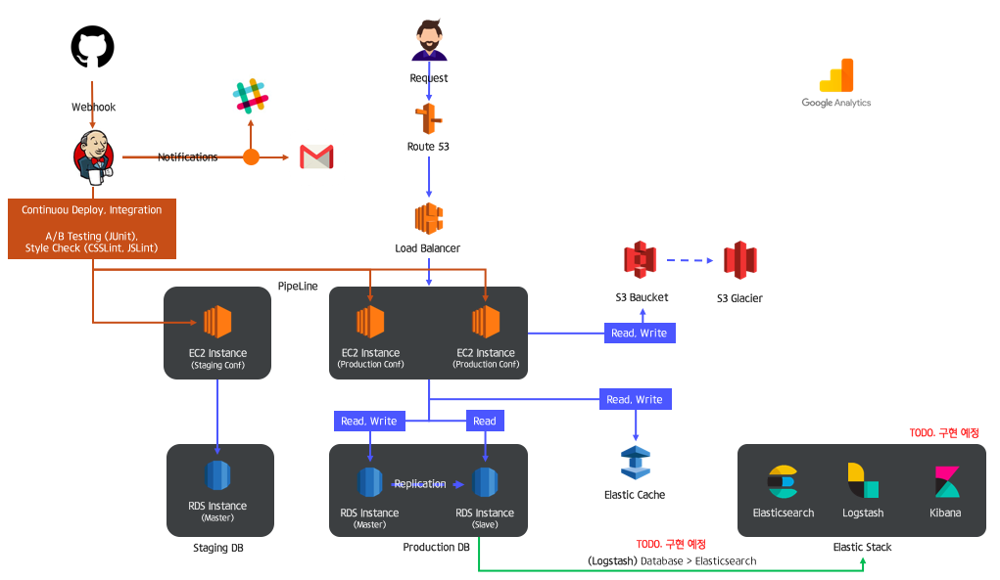

회사에 입사하게 되면 이미 만들어진 개발 환경에 적응하는 것이 우선이다.
이미 완성된 개발 환경에서 서비스 몇개 개발하는 것은 간단하다.
하지만 연차가 쌓임에 따라 조금 더 효율적이고 중요한 서비스를 만들고 싶다면 프레임 워크나 메모리 구조 등을 알아야 한다고 생각한다.
: JVM, GC 튜닝 등을 위해서라도..
그래서 재직중인 회사의 인프라, 개발 환경을 그대로 구축해보았다!
(웹 방화벽, Elastic Stack 제외)
CI/CD: Github, Jenkins, Mail SMTP, Slack Notification
(이건 필자가 최초 도입한거라..)
Route53
Load Balancer (CLB)
EC2 (Staging, Production)
Database (Staging, Production -> master, slave)
S3 (Bucket, Glacier)
Elastic Cache
